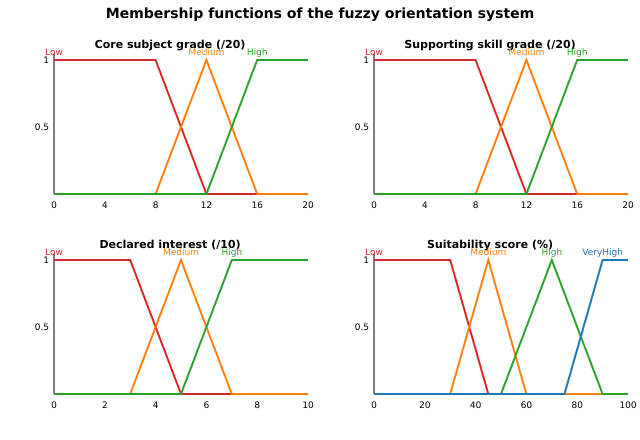

Final Project (TP-RCR) — Knowledge Representation and Reasoning
We build a University Orientation System that decides, for a student profile (grades, skills, interests), which of three majors — Artificial Intelligence (AI), Software Engineering (SE) and Cybersecurity (CYB) — are accessible (eligibility) and recommended (orientation). The same knowledge base is reasoned upon with three methods of the syllabus and the results are compared:
α : β / γ, extension
computation, defeasible presumptions and effective belief
retraction;Everything is implemented in pure Python 3 (standard library
only): run_all.py executes the five steps and
writes all logs/JSON to output/; 22 unit tests
(tests/test_system.py) pin every claim made below, so each
conclusion is justified by executable code and data.
| Major | Key subjects | Accessibility (eligibility) | Recommendation adds |
|---|---|---|---|
| AI | Mathematics, Algorithmics | algo ≥ 14 and math ≥ 14 | declared interest ≥ 7 or problem-solving ≥ 7 |
| SE | Programming, Algorithmics | prog ≥ 14 and average ≥ 12 | declared interest ≥ 7 or coding practice ≥ 7 |
| CYB | Networks, Programming | networks ≥ 14 and average ≥ 12 | declared interest ≥ 7 or problem-solving ≥ 7 |
Each student is described by grades (math,
algorithmics, programming, networks, on 0–20), skills
(problem_solving, coding_practice, on 0–10) and
interests (ai, se, cyber, on 0–10; the whole
questionnaire may be missing = null). Thresholds
(data/criteria.json): high grade ≥ 14, good average ≥ 12,
low average < 10, low math ≤ 9, strong skill ≥ 7, positive interest ≥
7, negative interest (dislike) ≤ 3, tie ≥ 7.
src/common.derive_facts() grounds first-order predicates
on one student into propositional atoms (the fact base
W shared by the classical and default engines):
| Predicate (form) | Ground atom | Derived iff |
|---|---|---|
| HighAlgo(s), HighMath(s), HighProg(s), HighNet(s) | high_algorithmics, … |
grade ≥ 14 |
| GoodAvg(s) / LowAvg(s) | good_average / low_average |
avg ≥ 12 / avg < 10 |
| WeakMath(s) | low_math |
math ≤ 9 |
| StrongPS(s) / StrongCoding(s) | strong_problem_solving /
strong_coding |
skill ≥ 7 |
| Interested(s,X) / Dislikes(s,X) | interests_x / dislikes_x |
interest ≥ 7 / ≤ 3 |
| UnknownInterest(s,X) | interest_unknown_x |
questionnaire missing for X |
| Tied(s) | tied_se_cyber |
interest_se = interest_cyber ≥ 7 |
A missing grade or interest yields no positive/negative atom
at all: classical logic then treats it as false (closed world),
whereas default logic can exploit the explicit
interest_unknown_x markers. This dual treatment is the
backbone of the comparison.
data/students.json)| ID | Student | math | algo | prog | net | ps | code | interests (ai/se/cyb) | Designed phenomenon |
|---|---|---|---|---|---|---|---|---|---|
| S01 | Amina Belkacem | 17 | 18 | 15 | 12 | 9 | 6 | 9 / 5 / 3 | clear AI talent, dislikes cyber |
| S02 | Yacine Haddad | 12 | 13 | 17 | 10 | 7 | 9 | 5 / 9 / 4 | clear SE profile |
| S03 | Meriem Saadi | 11 | 10 | 12 | 16 | 7 | 5 | 2 / 3 / 9 | clear CYB profile |
| S04 | Sofiane Meziane | 9 | 8 | 10 | 9 | 4 | 4 | 6 / 5 / 5 | weak record → remediation |
| S05 | Lina Zerouki | 15 | 16 | 14 | 11 | 6 | 5 | missing | missing data: abstain vs presume vs impute |
| S06 | Karim Boudjema | 16 | 15 | 14 | 10 | 6 | 7 | 1 / 8 / 2 | exception: AI grades but hates AI |
| S07 | Ines Larbi | 15 | 17 | 15 | 9 | 8 | 6 | missing, then 2 / 8 / 3 | belief revision (late questionnaire) |
| S08 | Omar Cherif | 11 | 12 | 13 | 17 | 7 | 6 | 3 / 4 / 8 | solid CYB, borderline for strict SE |
| S09 | Nadia Slimani | 13 | 14 | 14 | 13 | 6 | 6 | 6 / 6 / 6 | borderline: threshold artefacts |
| S10 | Riad Amrani | 14 | 14 | 15 | 15 | 8 | 8 | 5 / 7 / 7 | ambiguity/tie SE = CYB |
Knowledge is written as Horn clauses, e.g. C1 in predicate logic
∀s: EligibleAI(s) ← HighAlgo(s) ∧ HighMath(s), grounded per
student into eligible_ai ← high_algorithmics ∧ high_math.
data/rules_classical.json contains:
| # | Rule | # | Rule |
|---|---|---|---|
| C1 | eligible_ai ← high_algorithmics ∧ high_math |
C6 | recommended_se ← eligible_se ∧ interests_se |
| C2 | eligible_se ← high_programming ∧ good_average |
C7 | recommended_se ← eligible_se ∧ strong_coding |
| C3 | eligible_cyber ← high_networks ∧ good_average |
C8 | recommended_cyber ← eligible_cyber ∧ interests_cyber |
| C4 | recommended_ai ← eligible_ai ∧ interests_ai |
C9 | recommended_cyber ← eligible_cyber ∧ strong_problem_solving |
| C5 | recommended_ai ← eligible_ai ∧ strong_problem_solving |
C10 | needs_remediation ← low_average |
src/classical_logic.py implements forward
chaining: starting from W, any rule whose body is satisfied is
fired by Modus Ponens, its head accumulates, and passes repeat
until a fixpoint. Properties: sound and complete for
Horn KBs, terminating (each head is added once), and
monotonic — facts are never removed. Missing data
follows the Closed World Assumption (underivable =
false). Every firing is traced and explain() rebuilds a
justification tree (and a near-miss analysis
for non-derived atoms: which body atom was missing).
output/run_log.txt)| Student | Eligible | Recommended | Justification highlight |
|---|---|---|---|
| S01 | AI, SE | AI | C1+C4: algo 18 ∧ math 17 ∧ interest 9 |
| S02 | SE | SE | C2+C6: prog 17 ∧ avg 13 ∧ interest 9 |
| S03 | CYB | CYB | C3+C8: net 16 ∧ avg 12.25 ∧ interest 9 |
| S04 | – | – (+needs_remediation) |
C10: avg 9 < 10 |
| S05 | AI, SE | – (abstains) | C4 fails: interests_ai MISSING (questionnaire
null) |
| S06 | AI, SE | SE | C4 blocked (interest ai = 1); C6 fires (interest se = 8) |
| S07 (phase 1) | AI, SE | AI | C5 via strong_problem_solving = 8 |
| S08 | CYB | CYB | C3+C8 |
| S09 | SE | – (abstains) | math 13 < 14 kills C1; interest/skills 6 < 7 kill C4–C9 |
| S10 | AI, SE, CYB | AI, SE, CYB | C5+C6+C8 — three recommendations, no ranking |
Observed limitations. (i) Abstention on missing
data: S05 is eligible everywhere her grades allow but never
recommended — the near-miss trace shows exactly
interests_ai MISSING. (ii) Threshold artefacts:
S09 loses AI eligibility for one point of mathematics
(13 vs 14). (iii) Monotonicity: when S07’s follow-up
questionnaire arrives (she declares interest ai = 2), classical logic
still recommends AI (via C5) — nothing can be retracted. (iv) No
ranking: S10 gets three recommendations with no preference
mechanism.
A Reiter default α : β₁,…,βₙ / γ applies when its
prerequisite α is believed and each justification βᵢ is
consistent with the final belief set (“γ normally
holds, unless data proves otherwise”).
data/rules_default.json defines 8 defaults
(≥ 4 required) plus 7 strict rules (S1a…S4, encoded as
justification-free defaults α : / γ so they hold in every
extension):
| # | Default α : β / γ |
Reading |
|---|---|---|
| D1 | high_algorithmics : ¬dislikes_ai, ¬low_math / suited_ai |
strong in algo ⇒ normally suited for AI, unless declared dislike or critically weak math |
| D2 | high_programming : ¬dislikes_se / suited_se |
strong programmer ⇒ normally suited for SE, unless dislike |
| D3 | high_networks : ¬dislikes_cyber / suited_cyber |
strong in networks ⇒ normally suited for CYB, unless dislike |
| D4a-c | suited_X ∧ interest_unknown_X : ¬dislikes_X / recommended_X, presumed_interest_X |
missing questionnaire ⇒ presume a compatible interest and recommend, unless dislike |
| D5a | suited_se ∧ suited_cyber ∧ tied_se_cyber : ¬oriented_se / oriented_cyber |
tie ⇒ orient CYB unless oriented SE |
| D5b | suited_se ∧ suited_cyber ∧ tied_se_cyber : ¬oriented_cyber / oriented_se |
tie ⇒ orient SE unless oriented CYB |
Strict rules turn aptitude into recommendation on declared
evidence, e.g. S1a
suited_ai ∧ interests_ai : / recommended_ai, S1b
suited_ai ∧ strong_problem_solving : / recommended_ai (idem
S2a/S2b for SE, S3a/S3b for CYB), S4
low_average : / needs_remediation.
src/default_logic.py computes all
extensions by generate-and-test over processes (§2.3
“Calcul des extensions” of the syllabus): a DFS appends only defaults
applicable to the accumulated belief set (early pruning), maximal
processes are validated against their final belief set
(prerequisites still believed, justifications still consistent), and
duplicates are merged. Example sizes: S09 → 5 processes explored → 1
extension; S10 → 65 335 processes → 2 extensions. Each
conclusion keeps its support (which defaults produced it),
which is what makes retractions and re-justifications observable.
| Student | #Ext | Suited (presumed aptitude) | Recommended | Notes |
|---|---|---|---|---|
| S01 | 1 | AI, SE | AI | D3 blocked twice (net 12 < 14; dislikes_cyber) |
| S02 | 1 | SE | SE | aligned with classical |
| S03 | 1 | CYB | CYB | D1/D2 defeated by dislikes_ai,
dislikes_se |
| S04 | 1 | – | – (+ remediation) | S4 strict |
| S05 | 1 | AI, SE | AI*, SE* | * presumed by D4a/D4b — classical abstained |
| S06 | 1 | SE | SE | exception: D1 defeated by dislikes_ai
despite algo 15, math 16 |
| S07 ph.1 | 1 | AI, SE | AI, SE* | AI presumed (D4a) and strict (S1b); SE presumed (D4b) |
| S08 | 1 | CYB | CYB | aligned with classical |
| S09 | 1 | AI, SE | – | presumes AI aptitude although crisp C1 rejected it (math 13) |
| S10 | 2 | AI, SE, CYB | AI, SE, CYB | E1 concludes oriented_cyber (D5a), E2
oriented_se (D5b) — Nixon-diamond ambiguity |
Exception (required). For S06 the fact
dislikes_ai ∈ W (interest ai = 1 ≤ 3) makes D1’s
justification ¬dislikes_ai inconsistent:
suited_ai is never concluded, although the
student has the best AI grades of the cohort. The same mechanism defeats
D1/D2/D3 for S03.
Belief revision (required) — S07, two phases. Phase 1: questionnaire missing ⇒ W₁ ⊇ {high_algorithmics, high_math, high_programming, strong_problem_solving, interest_unknown_ai/se/cyber}; the single extension concludes {suited_ai, suited_se, recommended_ai, presumed_interest_ai, recommended_se, presumed_interest_se}. Phase 2: the follow-up arrives (ai = 2, se = 8, cyber = 3) ⇒ W₂ = W₁ ∪ {dislikes_ai, interests_se, dislikes_cyber} {interest_unknown_*}. Re-running the engine:
suited_ai,
recommended_ai, presumed_interest_ai,
presumed_interest_se (D1 defeated by
dislikes_ai; D4a/D4b lose their prerequisites);recommended_se
— support switches from presumption D4b to strict
evidence S2a (interests_se = 8 now
declared);derived(W₁) ⊆ derived(W₂) =
True in output/revision_demo.json).Comparison with the classical conclusions. On
complete, unambiguous profiles (S01–S04, S08) both logics agree. They
diverge exactly where knowledge is incomplete or exceptional: missing
data (S05, S07-ph1: classical abstains, defaults
presume — traceably, with presumed_interest_*),
exceptions (S06: defaults refuse an aptitude that grades alone
would suggest), borderline values (S09: D1 presumes
suited_ai where the crisp conjunction C1 rejects), and
ambiguity (S10: default logic represents the hesitation as two
extensions instead of hiding it).
data/fuzzy_config.json defines four linguistic variables
(figure: output/figures/membership_functions.svg). The
three inputs form Ruspini partitions
(µ_Low+µ_Medium+µ_High = 1 at every point — verified by unit test):

| Variable | Domain | Low | Medium | High | VeryHigh |
|---|---|---|---|---|---|
| Core grade (key subject) | [0,20] | trap(0,0,8,12) | tri(8,12,16) | trap(12,16,20,20) | – |
| Skill grade (support subject) | [0,20] | trap(0,0,8,12) | tri(8,12,16) | trap(12,16,20,20) | – |
| Interest | [0,10] | trap(0,0,3,5) | tri(3,5,7) | trap(5,7,10,10) | – |
| Suitability (output) | [0,100] % | trap(0,0,30,45) | tri(30,45,60) | tri(50,70,90) | trap(75,90,100,100) |
Per major the same rule base is instantiated by an input mapping: AI (core = math, skill = algorithmics, interest = ai), SE (core = programming, skill = algorithmics, interest = se), CYB (core = networks, skill = programming, interest = cyber).
FR1 Core H ∧ Skill H → High · FR2 Core H ∧ Int H → High · FR3 Core M ∧ Skill M → Medium · FR4 Skill H ∧ Int M → High (the TP example) · FR5 Core L → Low · FR6 Skill L ∧ Int L → Low · FR7 Core M ∧ Int H → Medium · FR8 Core H ∧ Skill L → Medium · FR9 Core L ∧ Skill H → Low · FR10 Core H ∧ Int L → Medium · FR11 Int L ∧ Skill H → Low · FR12 Core M ∧ Skill L → Low · FR13 Core H ∧ Skill H ∧ Int H → VeryHigh.
FR9/FR11 encode “talent cannot compensate a failing core subject / absent motivation”; FR10 lets grades partially compensate low motivation; FR13 distinguishes full excellence (it removes the saturation artefact of a single High shoulder). The rule base is complete: every input combination fires at least one rule (checked by enumeration over the partitions).
src/fuzzy_logic.py implements the Mamdani pipeline:
fuzzification → rule evaluation with AND = min → firing
strengths αᵣ → aggregation µ_agg(y) = maxᵣ min(αᵣ,
µ_Bᵣ(y)) → centroid defuzzification (numerical
integration, 401 samples). A missing interest is imputed to the neutral
value 5.0 (full Medium membership) and flagged in the
trace. Decision rule: the top major is recommended iff its score ≥ 60
%.
| Student | AI % | SE % | CYB % | Fuzzy decision | Classical said | Default said |
|---|---|---|---|---|---|---|
| S01 | 79.5 | 70.0 | 23.2 | AI | AI | AI |
| S02 | 54.5 | 73.2 | 41.4 | SE | SE | SE |
| S03 | 28.1 | 28.1 | 70.0 | CYB | CYB | CYB |
| S04 | 23.2 | 20.6 | 23.2 | none (< 60 %) | remediation | remediation |
| S05 | 70.0 | 70.0 | 48.9 | AI = SE (tie) | abstains | AI*, SE* |
| S06 | 40.4 | 67.1 | 28.1 | SE | SE | SE |
| S07 ph1 | 70.0 | 70.0 | 39.6 | AI = SE (tie) | AI | AI, SE* |
| S08 | 34.4 | 45.0 | 73.2 | CYB | CYB | CYB |
| S09 | 63.4 | 67.1 | 63.4 | SE | abstains | – (suited AI, SE) |
| S10 | 59.5 | 70.8 | 73.2 | CYB | 3 recs, no rank | 2 extensions |
Worked example (S09 → AI, from
output/fuzzy_results.json). Inputs: core = math 13
(µ_M = 0.75, µ_H = 0.25), skill = algo 14 (µ_M = 0.5, µ_H = 0.5),
interest = 6 (µ_M = 0.5, µ_H = 0.5). Fired rules: FR3 α = 0.5 → Medium;
FR4 α = 0.5 → High; FR7 α = 0.5 → Medium; FR1 α = 0.25 → High; FR2 α =
0.25 → High; FR13 α = 0.25 → VeryHigh. Aggregation + centroid ⇒
63.4 %: where the crisp threshold (math 13 < 14)
rejected AI outright, fuzzy logic answers “moderately suited” —
gradation instead of a cliff. Revision (S07): when interests (2/8/3)
replace the neutral imputation, AI falls 70.0 % → 37.4
% while SE rises 70.0 % → 73.2 %: revision by
smooth re-evaluation, without symbolic retraction.
| Dimension | Classical logic | Default logic | Fuzzy logic |
|---|---|---|---|
| Knowledge form | Horn clauses (crisp True/False) | Defaults α:β/γ + strict rules | Fuzzy rules over linguistic terms |
| Truth values | 2-valued | 2-valued but provisional | degrees µ ∈ [0,1] |
| Mechanism | Forward chaining, Modus Ponens, fixpoint | Extension computation (processes), justification consistency | Mamdani: min/max + centroid |
| Missing data | CWA ⇒ abstention (S05: eligible, never recommended) | Presumption D4a-c ⇒ actionable answer, traceable
(presumed_interest_*) and revocable |
Neutral imputation (interest = 5 ⇒ Medium) ⇒ always a ranked score |
| Exceptions | Cannot express “normally”; strict rules only | Justifications defeat defaults (S06:
dislikes_ai blocks D1) |
No exceptions; counter-evidence just lowers the score smoothly (S06 AI 40.4 % vs ≈70 % potential) |
| Revision | Monotonic — never retracts (S07 keeps AI recommendation despite declared dislike) | Non-monotonic — effective retraction (S07:
suited_ai, recommended_ai withdrawn;
recommended_se re-justified D4b→S2a) |
Re-evaluation: scores move continuously (AI 70→37.4 %) |
| Ambiguity/ties | Recommends everything that matches, no ranking (S10) | Multiple extensions make the hesitation explicit (S10: 2 extensions; choice = human decision) | Close scores give a soft quantitative tie-break (73.2 vs 70.8 vs 59.5) |
| Imprecision | Crisp thresholds ⇒ artefacts at boundaries (S09: one point of math flips eligibility) | Crisp, but presumptions soften rejections (S09:
suited_ai presumed) |
Native: gradual membership (µ_High(13) = 0.25) |
| Explanation | Proof trees + near-miss analysis | Supports per conclusion, applied defaults per extension | Fired rules with α, membership degrees |
| Cost / complexity | O(rules × passes) — trivial | Exponential in theory (S10: 65 335 processes); fine here | O(rules × samples) — trivial |
| Main pros | Simple, sound & complete, fully explainable | Commonsense “unless” reasoning; revisable; represents alternatives | Robust to imprecision; always ranks; tolerates missing values |
| Main cons | Brittle thresholds; abstains; cannot retract or rank | Extension multiplicity costly; conclusions hard to rank; choice among defaults is a design decision | Scores not symbolic — no explicit retraction; MF/rule design is subjective |
Synthesis. The three approaches are complementary rather than competing: classical logic gives the administrative floor (auditable eligibility), default logic adds commonsense flexibility (presume, defeat, revise — the only one that retracts S07’s recommendation when the exception arrives), and fuzzy logic provides the graded ranking the other two lack (it separates S10’s three-way tie and rescues S09 from a one-point rejection). A realistic orientation service would pipeline them: crisp eligibility → defeasible recommendation with revision → fuzzy scoring for the final ranking, with the symbolic traces as the explanation layer.
All five TP steps are implemented and exercised on the 10 profiles:
(1) a shared knowledge model with three majors, ten profiles and an
explicit fact vocabulary; (2) a classical forward-chaining engine whose
every conclusion (and refusal) is justified by a proof/near-miss trace;
(3) a default theory with 8 defaults, full extension computation, one
effective exception (S06) and one effective retraction (S07), plus a
two-extension ambiguity case (S10); (4) a from-scratch Mamdani system
with 4 variables, 13 rules and centroid-defuzzified percentages; (5) the
comparative analysis above, grounded in the observed divergences. For
the validation session: output/run_log.txt and the four
JSON result files contain every number quoted here, and
python3 -m unittest discover -s tests (22 tests, all green)
re-proves each claim directly from the code and data.